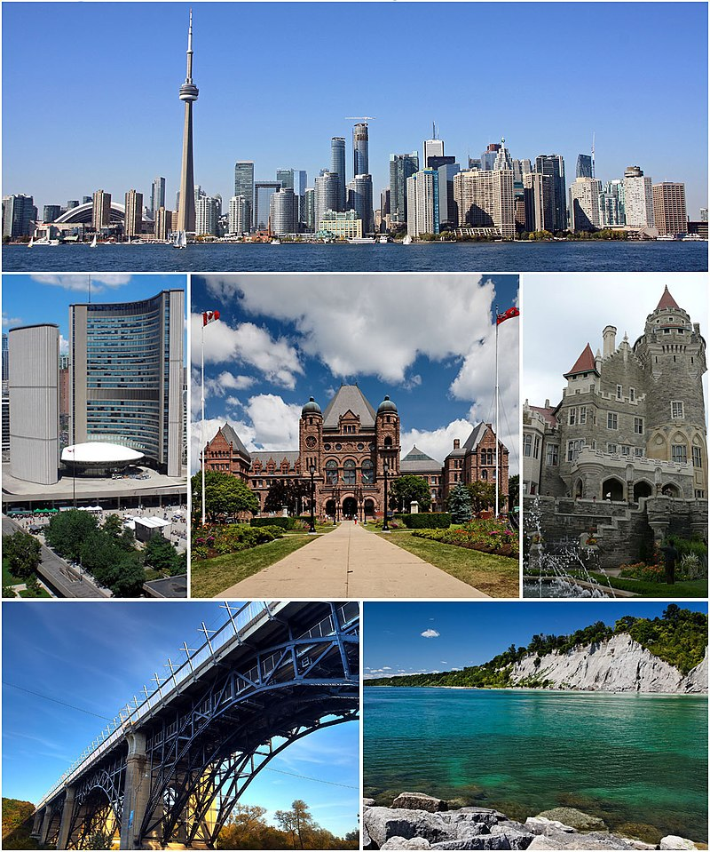
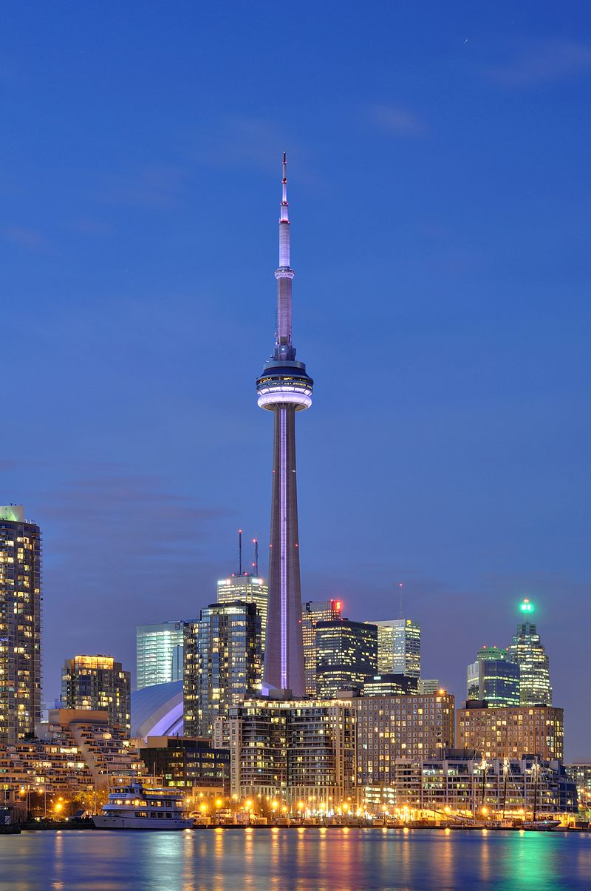

Toronto is the most populous city in Canada and the provincial capital of Ontario. With a population in 2016 of 2,731,571,[6][12] it is the fourth most populous city in North America after Mexico City, New York City, and Los Angeles. Toronto is the centre of the Greater Toronto Area (GTA), the most populous metropolitan area in Canada,[14] and anchors the Golden Horseshoe, a heavily urbanized region that is home to 9.2 million people,[15] or over 26% of the population of Canada.[16] A global city,[17] Toronto is an international centre of business, finance, arts, and culture,[18][19] and is recognized as one of the most multicultural and cosmopolitan cities in the world.
Toronto is the most populous city in Canada and the provincial capital of Ontario.
Indigenous peoples have travelled through and inhabited the area known as Toronto for more than 10,000 years.[25] Permanent European settlement began in the 1790s, after the broadly disputed Toronto Purchase of 1787, when the Mississaugas surrendered the area to the British Crown.[26] The British established the town of York, and later designated it as the capital of Upper Canada.[27] During the War of 1812, the town was the site of the Battle of York and suffered heavy damage by U.S. troops.[28] York was renamed and incorporated as the city of Toronto in 1834, and became the capital of the province of Ontario during Canadian Confederation in 1867.[29] The city proper has since expanded past its original borders through both annexation and amalgamation with surrounding municipalities at various times in its history to its current area of 630.2 km2 (243.3 sq mi).
Indigenous peoples have travelled through and inhabited the area known as Toronto for more than 10,000 years.[25] Permanent European settlement began in the 1790s, after the broadly disputed Toronto Purchase of 1787, when the Mississaugas surrendered the area to the British Crown.
Located in Southern Ontario on the northwestern shore of Lake Ontario, Toronto is situated on a broad sloping plateau intersected by an extensive network of rivers, deep ravines, and urban forest,[30] with 140 independently unique and clearly defined official neighbourhoods making up the city.[31] The diverse population of Toronto reflects its current and historical role as an important destination for immigrants to Canada,[32][33] with nearly 50% of residents belonging to a visible minority population group,[34] and over 200 distinct ethnic origins represented among its inhabitants.[35] While the majority of Torontonians speak English as their primary language, there are over 160 different languages spoken in the city. The diverse population of Toronto reflects its current and historical role as an important destination for immigrants to Canada,[32][33] with nearly 50% of residents belonging to a visible minority population group,[34] and over 200 distinct ethnic origins represented among its inhabitants.[35] While the majority of Torontonians speak English as their primary language, there are over 160 different languages spoken in the city.
Toronto is a prominent centre for music,[37] theatre,[38] motion picture production,[39] and television production,[40] and is home to the headquarters of Canada's major national broadcast networks and media outlets.[41] Its varied cultural institutions,[42] which include numerous museums and galleries, festivals and public events, entertainment districts, national historic sites, and sports activities,[43] attract over 25 million tourists each year.[44][45] Toronto is known for its many skyscrapers and high-rise buildings,[46] in particular the tallest free-standing structure in the Western Hemisphere, the CN Tower.[47] Its varied cultural institutions,[42] which include numerous museums and galleries, festivals and public events, entertainment districts, national historic sites, and sports activities,[43] attract over 25 million tourists each year.[44][45] Toronto is known for its many skyscrapers and high-rise buildings,[46] in particular the tallest free-standing structure in the Western Hemisphere, the CN Tower.[47]